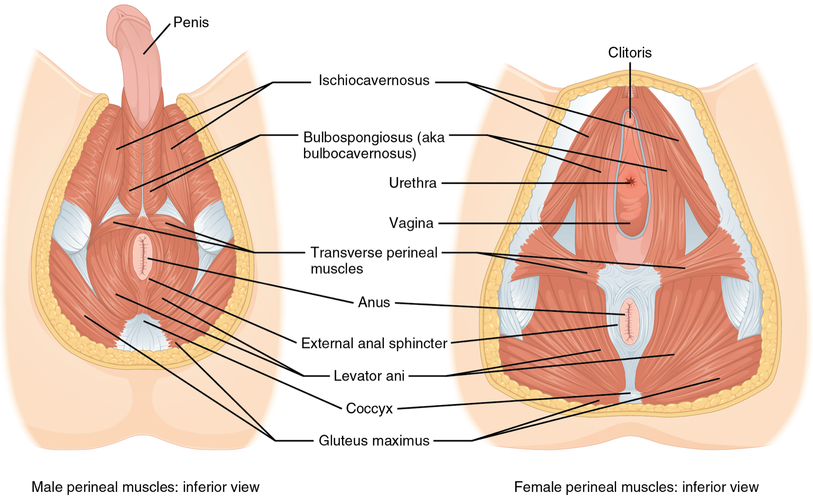

Página 18 · Parte B · Chão
Camadas empilhadas no corte sagital.
Vire a paciente e olhe por baixo: dois triângulos, quatro músculos
Pare e vire. Até aqui a pelve esteve de perfil, e as camadas empilhavam uma sobre a outra. Agora deite a paciente e olhe **por baixo**, na posição de quem examina no parto. A sínfise fica à frente, o cóccix atrás, e as tuberosidades de cada lado. O que era pilha de camadas vira **desenho na superfície**.
Sínfise à frente · cóccix atrás · tuberosidades laterais
Vire: agora você olha por baixo
⚠️ Atenção: o ângulo muda aqui, e a mudança é a mais brusca de todo o percurso.
Até este ponto, a pelve esteve de perfil, cortada ao meio, e todas as camadas do chão foram descritas empilhadas de dentro para fora. Abandone esse corte. Deite a paciente em posição de exame e olhe por baixo, como quem examina no parto. Nesse ponto de vista: a sínfise púbica fica à frente, na parte de cima do seu campo de visão; o cóccix fica atrás, na parte de baixo; e as tuberosidades isquiáticas ficam uma de cada lado.
O que muda não é só a estética: muda o que existe na figura. De perfil, as camadas se empilham e os territórios de superfície não aparecem — os trígonos, vistos de lado, não são nada. Por baixo, a pilha desaparece e o que se vê é um desenho na superfície. Quem não virou a cabeça junto procura triângulo numa figura de perfil, não encontra nenhum e conclui que não entendeu. Não é isso: é que eles não existem naquele ângulo.
O que era pilha vira desenho: dois triângulos
Nessa vista, a região se divide em dois triângulos. A linha que os separa é a que une as duas tuberosidades isquiáticas — a mesma linha bituberosa que fecha o estreito inferior. Repare no reencontro: a saída do canal de parto e o mapa do períneo são a mesma coisa vista de dois lados. O que na Parte A era o "aro que não é plano, formado por dois triângulos com base comum" é exatamente este desenho.
Trígono urogenital — a porção anterior, à frente, do lado da sínfise. (Registro de nomenclatura: o atlas o chama de região urogenital do períneo; a clínica diz trígono urogenital. Mesmo triângulo.)
Trígono anal — a porção posterior, atrás, do lado do cóccix. (Atlas: região anal do períneo.)
E o que está contido no trígono urogenital, item a item: o óstio uretral externo, o clitóris, a vulva de forma geral e o intróito vaginal. São as estruturas que a vista por baixo entrega de imediato, e é por isso que este triângulo é o que interessa quando o assunto é parto, episiotomia ou exame da genitália externa.
Os quatro músculos do espaço superficial
No espaço superficial estão quatro músculos, todos cobráveis nominalmente. Vale nomeá-los um a um, sem agrupar:
Músculo 1 — transverso superficial do períneo. O nome já diz o andar: transverso superficial mora no espaço superficial. Músculo 2 — esfíncter externo do ânus. Músculo 3 — bulboesponjoso, também chamado bulbocavernoso. (Os dois nomes valem e os dois aparecem: bulboesponjoso é o nome oficial; bulbocavernoso é o antigo, e é com ele que a maioria das bancas escreve. São o mesmo músculo — reconheça pelos dois, porque é com o segundo que ele volta na questão da episiotomia.) Músculo 4 — isquiocavernoso.
Qual músculo mora em qual triângulo
Agora o cruzamento que quase nunca é feito — e sem o qual sobram quatro nomes de um lado e dois triângulos do outro, sem ligação nenhuma:
> Três desses músculos moram no triângulo da frente, o urogenital: o isquiocavernoso, o bulboesponjoso e o transverso superficial do períneo. O quarto, o esfíncter externo do ânus, mora no triângulo de trás, o anal. > Os quatro se encontram num ponto só — o corpo perineal, no meio, entre a vagina e o ânus —, e é por isso que a literatura os agrupa como "os superficiais do períneo", mesmo com um deles morando no outro triângulo.
Fixe a geometria por essa convergência, porque ela é o que dá sentido ao conjunto: quatro músculos vindos de direções diferentes, convergindo num nó central. O transverso vem de cada lado, das tuberosidades, e cruza; o bulboesponjoso vem de trás para a frente, contornando o intróito; o isquiocavernoso vem do ísquio em direção ao clitóris; e o esfíncter do ânus circunda o ânus, atrás. Todos passam pelo mesmo ponto médio.
Como saber, olhando uma figura, em que andar você está
E fica a regra de leitura de figura, que é ouro porque dá um critério verificável em vez de uma impressão: identificar a membrana perineal na imagem é o que confirma que se está olhando a porção superficial. A membrana é o teto do espaço superficial — se ela aparece acima das estruturas mostradas, o que está desenhado é o andar de baixo, o superficial. Ela não é só um divisor: é o marco de orientação de qualquer imagem de períneo que aparecer.

Dois triângulos e musculatura superficial do períneo.
OpenStax / asset local de produção A12 (ver proveniência p18).
Quiz — fixação
Ao mudar do corte sagital para a vista inferior do períneo, o que acontece com os trígonos urogenital e anal?
- Gabarito B. Os trígonos são divisões topográficas de superfície: eles existem como territórios num plano, e num corte perpendicular a esse plano simplesmente não há o que mostrar. Essa é a lição transversal do conteúdo inteiro em estado puro — o ângulo escolhido decide o que existe na figura, e mudar de ângulo não é estética, é conteúdo.
- (A) trata a mudança como rotação de um mesmo objeto visível, quando a mudança é de natureza do que se vê: de pilha de camadas para desenho de superfície.
- (C) é a armadilha da sinonímia: os trígonos de fato têm dois nomes cada (trígono/região), mas isso é vocabulário, e não presença em dois planos.
- (D) vai longe demais: eles são representáveis, e a vista inferior os representa perfeitamente — inclusive com seus conteúdos e seus músculos.
- Por que cair na (A): a intuição de que "girar a figura mostra a mesma coisa de outro jeito" funciona para objetos sólidos e falha para divisões de superfície. É exatamente por isso que a troca de plano precisa ser anunciada: quem não vira a cabeça junto procura triângulo no corte de perfil e conclui que não entendeu.
Os quatro músculos do espaço superficial do períneo distribuem-se nos dois trígonos da seguinte forma:
- Gabarito B. Três moram na frente — isquiocavernoso, bulboesponjoso e transverso superficial do períneo — e o quarto, o esfíncter externo do ânus, mora atrás, no trígono anal, que é onde está o ânus. O que unifica os quatro não é o território e sim o ponto de convergência: todos se encontram no corpo perineal, no meio, entre vagina e ânus — e é por isso que a literatura os agrupa apesar de um deles estar do outro lado da linha.
- (A) é o erro mais provável e o mais consequente: colocar o esfíncter do ânus no trígono urogenital contradiz a própria localização do ânus, que é a estrutura do triângulo posterior.
- (C) distribui simetricamente por elegância, sem base — a divisão real é 3-1.
- (D) inverte tudo e ainda esvazia o trígono urogenital, que contém óstio uretral, clitóris, intróito e três dos quatro músculos.
- Por que cair na (A): o conjunto é apresentado como "os quatro músculos superficiais do períneo", e o rótulo comum sugere endereço comum. A régua: o agrupamento vem da convergência no corpo perineal, não do território — e onde está o ânus é onde está o esfíncter dele.
Numa figura de períneo, qual estrutura funciona como marco para confirmar que se está olhando o espaço superficial?
- Gabarito B. A membrana perineal é o teto do espaço superficial e o assoalho do profundo — logo, se ela aparece acima das estruturas desenhadas, o que está representado é o andar superficial. É um critério verificável, e não uma impressão: por isso ela é marco de orientação, além de divisor.
- (A) é o ponto de convergência dos músculos superficiais e um marco anatômico importante, mas está dentro do espaço superficial e não distingue andares — vê-lo não informa acima ou abaixo de quê se está.
- (C) está duas camadas acima e raramente aparece numa figura de períneo superficial; sua ausência é esperada e, portanto, não é critério.
- (D) separa trígono anterior de posterior, que é o eixo horizontal do desenho — nada diz sobre profundidade.
- Por que cair na (D): ela é a linha mais evidente da figura e organiza o mapa inteiro. Mas ela responde "em que triângulo estou?", e a pergunta era "em que andar estou?" — são dois eixos diferentes, e cada um tem o seu marco.